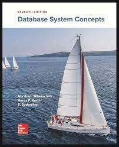

Πληροφορίες για Βάσεις Δεδομένων
Βιβλία και Διαλέξεις
Συστήματα Διαχείρισης Βάσεων Δεδομένων
Συγγραφείς: Ramakrishnan & Gehrke
Περιγραφή: Το βιβλίο καλύπτει σε βάθος την θεωρία και τις εφαρμογές των βάσεων δεδομένων. Περιλαμβάνει αρχές διαχείρισης, δομής και ασφάλειας βάσεων δεδομένων καθώς και παραδείγματα διαχείρισης μέσω SQL.
Σελίδες: 1000
Συνολική διάρκεια διάλεξης: 1:01:05
 Ηλεκτρονικό βιβλίο
Αξιολόγηση: 4.7/5 (120 αξιολογήσεις)
Παρακολούθηση διάλεξης
Ηλεκτρονικό βιβλίο
Αξιολόγηση: 4.7/5 (120 αξιολογήσεις)
Παρακολούθηση διάλεξης
Συστήματα Βάσεων Δεδομένων
Συγγραφείς: Hector Garcia-Molina, Jeffrey D. Ullman, Jennifer Widom
Περιγραφή:Ένα βιβλίο για την ανάλυση και τον σχεδιασμό βάσεων δεδομένων. Παρουσιάζει τις θεμελιώδεις αρχές, μοντέλα δεδομένων, SQL και τεχνικές βελτιστοποίησης. Αποτελεί βασικό εγχειρίδιο για σπουδές στις βάσεις δεδομένων.
Σελίδες: 1200
Συνολική διάρκεια διάλεξης: 1:01:05
 Ηλεκτρονικό βιβλίο
Αξιολόγηση: 4.5/5 (90 αξιολογήσεις)
Παρακολούθηση διάλεξης
Ηλεκτρονικό βιβλίο
Αξιολόγηση: 4.5/5 (90 αξιολογήσεις)
Παρακολούθηση διάλεξης
Database System Concepts
Συγγραφείς: Abraham Silberschatz, Henry F. Korth, και S. Sudarshan
Περιγραφή: Το βιβλίο καλύπτει τις βασικές αρχές και τα μοντέλα δεδομένων, με έμφαση στη θεωρία και την πρακτική των συστημάτων διαχείρισης βάσεων δεδομένων. Περιλαμβάνει αναλυτικές εξηγήσεις για SQL, οργάνωση αποθήκευσης, ασφάλεια, και ανάκτηση δεδομένων. Το βιβλίο είναι ευρέως διαδεδομένο και αποτελεί κλασικό εγχειρίδιο για φοιτητές και επαγγελματίες στον τομέα.
Σελίδες: 1200
Συνολική διάρκεια διάλεξης: 1:01:05

Ηλεκτρονικό βιβλίο
Αξιολόγηση: 4.6/5 (90 αξιολογήσεις)
Παρακολούθηση διάλεξης